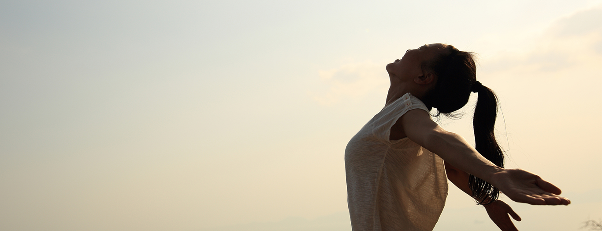

....You were not born to suffer
You were born to be yourself
Ra Uru Hu
עיצוב אנושי הוא הזמנה לפגוש את עצמך – לא את הגרסה שלמדת להיות, אלא את מי שתמיד היית בפנים, עוד לפני שהעולם התחיל
ללחוש לך איך "צריך".
זו שפה שמבקשת להזכיר לך: אין בך שום דבר שצריך לתקן. להפך – יש בך חוכמה, ייחוד, ותדר מדויק שמבקש להישמע.>ידע עתיק עם מדע מודרני – אבל בלב שלו יש דבר אחד פשוט: לעזור לך לחיות חיים שנכונים לך.
לא על פי חוקים של אחרים. לא מתוך מאמץ לרצות או להשתנות.
אלא מתוך הקשבה לעצמך, מתוך הסכמה לנוח בזהות שלך, ולפעול בקצב, בדרך, ובאנרגיה שהטבע נתן לך.
המפה האישית שלך היא כמו מראה – היא לא מספרת לך מי אתה צריך להיות, אלא מחזירה לך הביתה.
לHUMAN DESIGN יש שפה, אבל היא לא תיאוריה – היא הזמנה להתנסות.
לשחרר שליטה ולבחור אמון.לחזור הביתה – אל עצמך.
נעים להכיר😀
שמי ליאורה
עיצוב אנושי בשבילי הוא לא שיטה – זו דרך חיים.
זו שפה שמצאתי בתוכה בית, אחרי שנים שבהן לא תמיד היה לי קל להבין למה אני מרגישה כל כך אחרת.
פרוג’קטור אינטואיטיבי עם פרופיל 5/1 ורק ערוצים אינדיבידואליים, החיים תמיד הרגישו כמו תדר מיוחד, לפעמים שקט מדי או עמוק מדי לעולם סביבי. כשהגעתי לעיצוב האנושי – משהו בי נרגע. פתאום היה הסבר. הייתה לגיטימציה. והייתה נחיתה רכה לתוך עצמי.
העולם הפנימי תמיד היה המרכז שלי. עבדתי במשך שנים בתחום בריאות הנפש והטיפול, ותמיד משכה אותי הדרך שמובילה פנימה – אל המקומות השקטים, שבהם נולדת תנועה אמיתית.